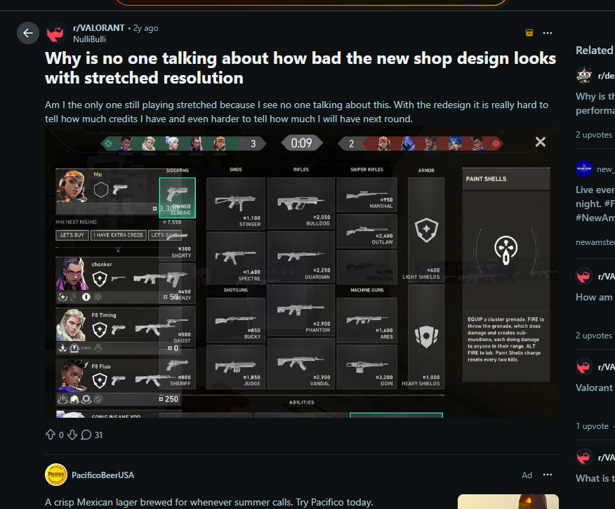
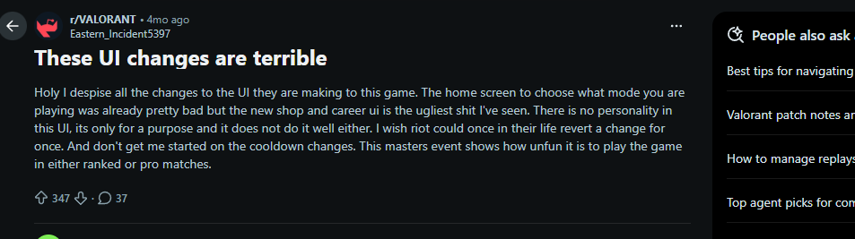

Responsive Menu UI for Stretched Resolutions
An independent VALORANT product concept exploring how responsive out-of-match menus could keep important actions visible and usable for players using 5:4 and 4:3 stretched resolutions.
Players using 5:4 and 4:3 stretched resolutions can lose access
to important out-of-match actions when persistent panels compete
for limited screen width.
I interviewed six players, reviewed outside community signals,
compared four solution paths, defined a responsive-menu MVP, and
built an interactive prototype designed to protect critical actions
without changing VALORANT's in-match experience.
Independent product concept. This project is not affiliated with
or endorsed by Riot Games. VALORANT and related marks belong to
Riot Games.
At a Glance
Problem Statement
How Might We
How might we keep critical out-of-match actions visible and clickable across 5:4 and 4:3 resolutions without changing VALORANT's in-match competitive experience?
As a player using a stretched resolution, I want core client actions to remain accessible so I can keep my preferred display setup without repeatedly changing resolutions.
Where This Started
The Player Need
Players using 5:4 or 4:3 stretched resolutions need Shop, navigation, and Settings controls to remain visible and clickable.
They should not have to switch away from their preferred gameplay setup just to complete basic client tasks before entering a match.
Why I Investigated It
I personally use 5:4 stretched because the gameplay experience feels more comfortable to me than 16:9.
Matches feel normal, but parts of the out-of-match interface become compressed. In one recurring state, the Quests panel can compete with or cover access to Shop.
Evidence boundary: the blocked Shop interaction is my own repeated client observation. The interviews and public posts support the broader stretched-resolution usability problem, not necessarily that exact overlap for every player.
Scope: Out-of-match menus and Settings only. This concept does not change the in-match HUD, crosshair, minimap, FOV, hitboxes, models, aiming, sensitivity, or competitive behavior.
Interactive Prototype
This slideshow connects the original client evidence to the proposed responsive experience. The first two slides show the unedited client screenshots. The third slide previews the proposed responsive layout and opens the full published prototype when clicked.
From Current Experience to Responsive Prototype
Use the arrows or dots to compare the native layout, the compressed stretched layout, and the proposed responsive experience.
01 / 03
Arrow keys and swipe are supported
Prototype instructions:
Click any slideshow image to open the full prototype. Inside the
prototype, select Settings to view Automatic Mode,
Menu Scale, Safe Area, Preview Changes, and Reset to Automatic.
Research Approach
I used three evidence sources: short player interviews, my repeated client observation, and public community discussions about menu usability.
| Research Detail | What Was Collected |
|---|---|
| Participants | 6 VALORANT players |
| Interview Topics | Navigation, UI changes, stretched resolution, menu usability, and what players would actually want changed |
| Firsthand Observation | Repeated 5:4 use and documented examples of interface compression |
| Secondary Research | Two independent public discussions from separate interface updates |
| Sample Limit | A directional sample intended to justify prototype testing, not represent the entire player population |
The original interview notes did not record a consistent rank, resolution, or play-frequency breakdown for every participant. This case study therefore does not invent those details.
Key Research Themes
Players Preferred Familiarity
Interviewed players generally did not ask for a full visual redesign. They wanted navigation to remain understandable and predictable.
Repeated Interview ThemeStretched Layouts Can Reduce Access
Narrower aspect ratios create less space for persistent navigation, social, quest, and action elements.
Interviews + Client ObservationGameplay Should Stay Untouched
The solution should not change aiming, models, FOV, hitboxes, HUD information, or competitive behavior.
Scope DecisionMore Controls Could Add Friction
Manual settings can help as a fallback, but the system should work automatically before asking players to configure it.
Product Tradeoff“I usually do not like when VALORANT changes its UI. They change it so constantly, but somehow it feels worse when I navigate.” — Interviewee A
“The UI is nice, but it could be touched up for stretched resolution.” — Interviewee B
Secondary Research
Public discussions were used as supporting community signals. They suggest that stretched-resolution readability and broader navigation friction have appeared across more than one interface update.

2024: Stretched Shop readability discussion

2026: Broader navigation and interface discussion
These threads are anecdotal signals, not prevalence data. Six interviews and two public discussions justify further testing, but they do not prove that every stretched-resolution player has the same problem.
Options Considered
| Option | Impact | Effort | Tradeoff |
|---|---|---|---|
| Patch only the blocked Shop state | Medium | Low | Fastest option, but a future banner, quest panel, or menu update could recreate the same problem elsewhere. |
| Manual UI scale control | Medium | Low | Helpful as a fallback, but places setup work on the player and may not fully prevent overlap. |
| Fixed native-ratio menu canvas | High | Medium | Predictable and safer, but could feel visually disconnected from the player's selected display mode. |
| Responsive breakpoints and protected safe frame | High | High | Addresses the system behavior and can support future out-of-match screens. Selected. |
Product Principles
Protect Critical Actions
Shop, Back, Close, Confirm, Cancel, and Apply should remain visible and clickable at every supported menu resolution.
Adapt Secondary Content First
Quest panels, social elements, and secondary information can collapse or move before primary actions are reduced.
Keep Players in Control
Automatic behavior should be the default, with optional scale, safe-area, preview, reset, and revert controls available in Settings.
MVP Scope
What the MVP Changes
- Shop and Settings reflow at defined 5:4 and 4:3 breakpoints
- Critical actions remain inside a protected safe frame
- Quests and secondary panels collapse when width is limited
- One expandable Settings experience exposes optional scale and safe-area controls
What the MVP Leaves Alone
- In-match HUD, minimap, crosshair, abilities, and kill feed
- FOV, hitboxes, models, sensitivity, and aiming behavior
- VALORANT's existing visual identity
- Native-resolution layouts unless adaptation is needed
MVP Requirements
| ID | Requirement | Acceptance Criteria |
|---|---|---|
| R1 | Detect the current viewport and load the matching menu profile. |
|
| R2 | Keep critical Shop and Settings actions inside a protected safe frame. |
|
| R3 | Reflow menus at defined narrow-screen breakpoints. |
|
| R4 | Add an Adaptive Menu UI area in Video Settings. |
|
| R5 | Preview and revert unconfirmed display changes. |
|
| R6 | Leave all in-match UI and gameplay behavior untouched. |
|
Edge Cases
Localization
Longer translated labels may require more space than the original English text.
Display Changes
The client must respond safely when resolution or display mode changes while it is open.
Windowed Modes
Windowed and borderless modes can create viewport sizes that do not match a standard aspect ratio.
Event Content
New event banners, offers, and quest states should not push critical actions outside the safe frame.
Minimum Legibility
Text and click targets should remain readable and usable after reflow or scaling.
Detection Failure
If the correct menu profile cannot be loaded, the system should return to a safe default instead of displaying an unusable layout.
Validation Plan
Moderated Usability Test
Test the current and proposed Shop and Settings tasks with five players across 16:9, 5:4, and 4:3 configurations.
- Ask each player to open Shop and complete a defined Settings task
- Observe task time, errors, misclicks, backtracks, and resolution switching
- Compare the current experience against the responsive prototype
- Record clarity and satisfaction feedback
- Update the requirements and prototype based on results
Success Metrics
Task Completion Rate
Can players open Shop and complete Settings tasks?
Median Completion Time
How long does each defined task take?
Misclicks and Backtracks
Does the layout create hidden navigation friction?
Forced Resolution Switching
Does the player leave the task to change display settings?
Player Clarity Rating
Does the new layout feel understandable and predictable?
Native-Resolution Regression
Does the 16:9 experience remain equal or better?
Risks and Kill Criteria
I would not keep the concept only because I personally like it. The scope should be reduced or the project should be stopped if validation shows the proposed system is the wrong solution.
| Evidence | Decision |
|---|---|
| The overlap occurs only in one temporary event state | Ship a targeted Shop fix instead of a shared responsive system. |
| Responsive reflow creates unacceptable performance, rendering, or input risk | Use a fixed native-ratio menu canvas and safe-area control as the MVP. |
| Usability testing does not improve completion or reduces clarity | Kill the concept or narrow it to the single highest-severity screen. |
| Native-resolution players regress | Do not release until the regression is removed. |
| Any in-match UI or competitive behavior changes | Stop the release and separate the responsive menu system from all in-match systems. |
Next Steps
- Organize the six interview notes into a consistent research summary and record any reliable theme counts.
- Run five moderated usability sessions using the current layout and interactive responsive prototype.
- Compare task completion, time, errors, resolution switching, clarity, and player preference.
- Refine the responsive breakpoints and Settings controls based on observed behavior.
- Add the actual test results and final product recommendation to this case study.
The first validation question is intentionally simple: can a player open Shop at 5:4 without thinking about the layout?
What I Learned
This project helped me separate a personally frustrating experience from a product problem that could be investigated. My own experience identified the issue, but it was not enough to prove how common or severe the problem was.
The strongest direction was not a complete redesign. It was a smaller responsive system that protects critical actions, adapts secondary content first, preserves familiar navigation, and leaves the competitive experience untouched.
Building the interactive prototype also forced me to translate product requirements into visible interface behavior. The concept needed to demonstrate how Shop remains accessible, how Missions collapse, and how players retain control through Settings—not merely describe those ideas in a document.
I also learned that a strong product proposal should state what evidence would cause the team to narrow, change, or stop the solution—not only what evidence would support shipping it.
[1] Reddit — “Why is no one talking about how bad the new shop
design looks with stretched resolution” (2024)
[2] Reddit — “These UI changes are terrible” (2026)
[3] Riot Games — “Performance Boost: VALORANT's Global
Invalidation” (March 8, 2022)
[4] Riot Games — VALORANT Patch Notes 12.07
(April 14, 2026)